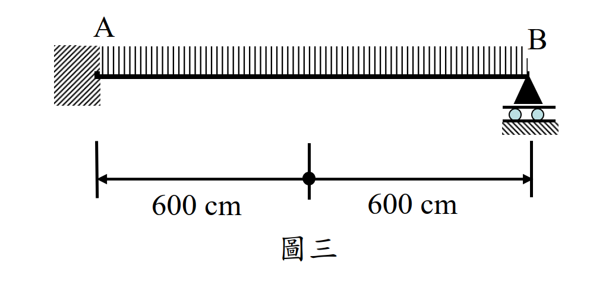

考題編號：SS-2021-3
主分類： SS-U1-2 梁桿件
副分類： SD-U3-1 結構耐震設計
設計法： LRFD
標籤： 梁桿件 耐震設計 耐震緊實斷面 LTB側扭挫屈 斷面選擇 塑性彎矩 形狀因子 SM490 寬厚比 Lp Lr 側向支撐 改善策略
1. 原始題目重述 (Problem Restatement)
耐震結構系統中，承受均布載重 $w$ 的鋼梁如圖三所示：
- 材料： SM490，$F_y = 3.5$ tf/cm²，$F_u = 4.9$ tf/cm²，$F_r = 1.16$ tf/cm²，$E = 2040$ tf/cm²
- 跨度： 全跨 $L = 600 + 600 = 1200$ cm（A 點至 B 點）
- 側向支撐： A 點（與鋼柱彎矩接合處）及 B 點均有充分側向支撐，無中間側向支撐
- 無支撐長度： $L_b = 1200$ cm
試求（自表一選擇斷面，45分）：
- 選擇符合耐震設計需求且最能有效發揮斷面性質之斷面，並說明原因
- 計算所選斷面之塑性彎矩強度 $M_p$ 及形狀因子 $f$
- 依 LRFD 規範檢核是否能發揮塑性極限強度
- 若不能，說明改善方式；若能，說明理由並計算塑性極限強度

圖說：圖三為梁結構示意（側視圖）。左端 A 點固接於柱（斜線陰影表示柱或牆），右端 B 點為三角形支承（pin/roller）；均布載重 $w$（tf/cm）向下作用於梁頂面；A–B 跨度分為兩個 600 cm，總長 1200 cm；A 端與 B 端均標示有充分側向支撐。表一提供四個備選斷面的完整斷面性質（含耐震設計所需之 J、Cw、X1、X2、rT 等參數）。
2. 考題核心精神與出題者意圖 (Core Concepts & Examiner's Intent)
核心觀念：耐震緊實斷面篩選 → LTB 三段式判斷 → 改善策略
本題三層考核（共 45 分，為最高分題目）：
- 耐震緊實斷面（Seismic Compact Section）：用 $\lambda_{pd}$（比標準 $\lambda_p$ 更嚴格）篩選合格斷面
- LTB 判斷：計算 $L_p$、$L_r$，判斷 $L_b = 1200$ cm 落在哪個區段
- 改善策略：若無法達到 $M_p$，需說明如何透過增加側向支撐改善
出題者考查重點：
- 區分耐震設計的 $\lambda_{pd}$ 與一般設計的 $\lambda_p$（兩者公式不同）
- 正確使用 $L_p = 80r_y/\sqrt{F_{yf}}$ 判斷塑性區間
- 計算 $Z_x$（塑性斷面模數）和形狀因子 $f = Z_x/S_x$
- 提出具體的改善方式（增加中間側向支撐點，使 $L_b \leq L_p$）
3. 解題戰略地圖與陷阱分析 (Strategic Roadmap & Trap Analysis)
步驟規劃：
- 對四個斷面逐一檢核耐震寬厚比（$\lambda_{pd}$）→ 淘汰不合格者
- 計算剩餘斷面的 $L_p$，判斷 $L_b = 1200$ cm 的區段
- 選出「最適當」斷面（能有效發揮性質，且最符合耐震要求）
- 計算 $Z_x$、$M_p$、$f$
- 確認 $L_b > L_p$ → 無法達到 $M_p$ → 說明如何改善
關鍵陷阱：
⚠️ 陷阱1：用一般 $\lambda_p$ 而非耐震 $\lambda_{pd}$
耐震設計要求更嚴格的緊實斷面，翼板：$\lambda_{pd} = 14/\sqrt{F_y}$（非 $17/\sqrt{F_y}$）；腹板：$\lambda_{pd} = 138/\sqrt{F_y}$（非 $170/\sqrt{F_y}$）。⚠️ 陷阱2：混淆 $r_y$ 與 $r_T$
$L_p$ 用 $r_y$（整個斷面的弱軸迴轉半徑）；$L_r$ 用 $r_T$（受壓翼板 + 腹板受壓部分的迴轉半徑），兩者不同。⚠️ 陷阱3：選最重斷面而非最合適斷面
「可有效發揮斷面性質」並非選最重的斷面，而是選在 $L_b = 1200$ cm 下 LTB 折減最小（即 $r_y$ 最大），且重量最輕的合規斷面。
3.5 變數層次分析（Variable Hierarchy Analysis）
複習提示：解題後，在每個卡住的知識點「卡關?」欄標記
⚠；第二次複習時只看有⚠的項目。
最終目標： 以耐震寬厚比 $\lambda_{pd}$ 篩選合格斷面 → 比較 $L_b$ 與 $L_p$/$L_r$ → 選出最適斷面並計算 $Z_x$、$M_p$、$f$ → 說明無法達到 $M_p$ 及改善方式（增設中間側向支撐）
主要公式（$\boxed{\phantom{x}}$ = 未知，待推導）
Step 1：耐震緊實斷面篩選
$$\lambda_{pdf} = \frac{14}{\sqrt{F_y}}, \quad \lambda_{pdw} = \frac{138}{\sqrt{F_y}}$$
Step 2：$L_p$ 判斷
$$\boxed{L_p} = \frac{80 r_y}{\sqrt{F_y}}$$
Step 3：塑性斷面模數與塑性彎矩
$$\boxed{Z_x} = 2\left[b_f t_f\left(\frac{h_w}{2}+\frac{t_f}{2}\right) + t_w \frac{h_w}{2} \cdot \frac{h_w}{4}\right]$$
$$\boxed{M_p} = F_y \cdot \boxed{Z_x}, \quad \boxed{f} = Z_x / S_x$$
Step 4：非彈性 LTB 折減強度（$L_p < L_b < L_r$）
$$\boxed{M_n} = C_b\left[M_p - (M_p - M_r)\frac{L_b - L_p}{L_r - L_p}\right] < M_p$$
L1：題目直接給定
| 符號 | 數值 | 說明 |
|---|---|---|
| $F_y$ | 3.5 tf/cm²（SM490） | 降伏應力 |
| $F_r$ | 1.16 tf/cm² | 殘留應力 |
| $E$ | 2040 tf/cm² | 彈性模數 |
| $L_b$ | 1200 cm | 無支撐長度（全跨，無中間支撐） |
| 候選斷面 | 4 個（見表一） | BH700×300×9×19 等 |
| 耐震需求 | 耐震緊實斷面（$\lambda_{pd}$） | 比一般 $\lambda_p$ 更嚴格 |
L2：需知識點推導
Step 1：耐震寬厚比篩選
| 符號 | 公式 / 來源 | 卡關? |
|---|---|---|
| $\lambda_{pdf}$ | $14/\sqrt{3.5} = 7.48$（翼板限值） | |
| $\lambda_{pdw}$ | $138/\sqrt{3.5} = 73.8$（腹板限值） | |
| BH700×300×9×19 | 翼板 $\lambda_f = 300/(2 imes 19) = 7.89 > 7.48$ → 淘汰 | |
| 其餘三斷面 | 翼板與腹板均符合 $\lambda_{pd}$ → 合格 |
Step 2：計算 $L_p$，選最適斷面
| 符號 | 公式 / 來源 | 卡關? |
|---|---|---|
| $L_p$ (BH700×300×12×25) | $80 imes 7.03/1.871 = 300.5$ cm（$L_b$ 遠大於此） | |
| $L_p$ (BH500×500×16×36) | $80 imes 13.2/1.871 = 564.6$ cm（$r_y$ 大，折減較小） | |
| $L_p$ (BH500×500×25×50) | $564.6$ cm（$r_y$ 同上，但更重） | |
| 選定 | BH500×500×16×36（$r_y$ 最大，LTB 區間最佳，最輕） |
Step 3：選定斷面 $Z_x$、$M_p$、$f$
| 符號 | 公式 / 來源 | 卡關? |
|---|---|---|
| $h_w$ | $500 - 2 imes 36 = 428$ mm = 42.8 cm | |
| $Z_x$ | $2[50 imes 3.6 imes 23.2 + 1.6 imes 21.4 imes 10.7] = 9{,}085$ cm³ | |
| $f$ | $Z_x/S_x = 9085/8180 = 1.111$ | |
| $M_p$ | $3.5 imes 9085 = 31{,}797$ tf·cm（317.97 tf·m） | |
| $\phi_b M_p$ | $0.9 imes 31797 = 28{,}618$ tf·cm |
Step 4：LTB 強度與改善方式
| 符號 | 公式 / 來源 | 卡關? |
|---|---|---|
| $F_L$ | $\min(F_y - F_r, F_{yw}) = \min(2.34, 3.5) = 2.34$ tf/cm² | |
| $L_r$ | $r_T X_1 / F_L \sqrt{1+\sqrt{1+X_2 F_L^2}} = 2615$ cm | |
| LTB 區間 | $L_p = 564.6 < L_b = 1200 < L_r = 2615$ → 非彈性 LTB | |
| $M_n$ | $C_b[M_p - (M_p-M_r)(L_b-L_p)/(L_r-L_p)] = 27{,}875$ tf·cm < $M_p$ | |
| 改善 | 加設 2 個中間側向支撐（每隔 400 cm），使各段 $L_b = 400 < L_p = 565$ cm |
L3：深層知識（不懂就卡住）
| 知識點 | 說明 | 補強頁 | 卡關? |
|---|---|---|---|
| 耐震 $\lambda_{pd}$ vs 一般 $\lambda_p$ | 耐震翼板 $14/\sqrt{F_y}$（非 $17/\sqrt{F_y}$），腹板 $138/\sqrt{F_y}$（非 $170/\sqrt{F_y}$）；更嚴格確保塑性轉角能力 | ||
| $r_y$ 大表示 LTB 折減小 | $L_p \propto r_y$；$r_y$ 大，$L_p$ 大，$L_b < L_p$ 的機會更大；BH500×500 比 BH700×300 的 $r_y$ 大得多 | ltb-3zone · LATERAL-TORSIONAL-BUCKLING | |
| LTB 三段判斷 $L_b$ vs $L_p$/$L_r$ | $L_b \leq L_p$：$M_n = M_p$；$L_p < L_b \leq L_r$：非彈性線性折減；$L_b > L_r$：彈性折減 | ltb-3zone | |
| $r_T$ vs $r_y$ 的用途 | $L_p$ 用 $r_y$（整個斷面弱軸）；$L_r$ 用 $r_T$（受壓翼板 + 受壓腹板部分的迴轉半徑） | ||
| 選最適斷面不選最重 | 「有效發揮斷面性質」= 在 $L_b$ 條件下 LTB 折減最小且重量最輕；非最重也非最強 |
4. 步驟化詳細計算過程 (Step-by-Step Detailed Calculation)
Step 1：耐震緊實斷面檢核（$\lambda_{pd}$）
$F_y = 3.5$ tf/cm²（SM490）
耐震寬厚比限值：
$$\lambda_{pdf} = \frac{14}{\sqrt{F_y}} = \frac{14}{\sqrt{3.5}} = \frac{14}{1.871} = 7.48 \quad \text{（翼板，不加勁元素）}$$
$$\lambda_{pdw} = \frac{138}{\sqrt{F_y}} = \frac{138}{1.871} = 73.8 \quad \text{（腹板，加勁元素）}$$
| 斷面 | 翼板 $\lambda_f = b_f/(2t_f)$ | vs $\lambda_{pdf}=7.48$ | 腹板 $\lambda_w = h_w/t_w$ | vs $\lambda_{pdw}=73.8$ | 耐震緊實？ |
|---|---|---|---|---|---|
| BH700×300×9×19 | $300/(2\times19)=7.89$ | 7.89 > 7.48 ✗ | $(700-38)/9=73.6$ | 73.6 < 73.8 ✓ | ❌ 翼板不合格 |
| BH700×300×12×25 | $300/(2\times25)=6.0$ | 6.0 < 7.48 ✓ | $(700-50)/12=54.2$ | 54.2 < 73.8 ✓ | ✅ |
| BH500×500×16×36 | $500/(2\times36)=6.94$ | 6.94 < 7.48 ✓ | $(500-72)/16=26.75$ | 26.75 < 73.8 ✓ | ✅ |
| BH500×500×25×50 | $500/(2\times50)=5.0$ | 5.0 < 7.48 ✓ | $(500-100)/25=16.0$ | 16.0 < 73.8 ✓ | ✅ |
淘汰：BH700×300×9×19（翼板寬厚比超過耐震限值）
Step 2：計算 $L_p$，比較 $L_b = 1200$ cm
公式（題目提供）：
$$L_p = \frac{80 r_y}{\sqrt{F_{yf}}}$$
其中 $F_{yf} = F_y = 3.5$ tf/cm²，$\sqrt{F_y} = 1.871$
| 斷面 | $r_y$ (cm) | $L_p = 80 r_y / 1.871$ (cm) | $L_b = 1200$ cm vs $L_p$ |
|---|---|---|---|
| BH700×300×12×25 | 7.03 | $80\times7.03/1.871 = \mathbf{300.5}$ | 1200 >> 300.5 |
| BH500×500×16×36 | 13.2 | $80\times13.2/1.871 = \mathbf{564.6}$ | 1200 > 564.6 |
| BH500×500×25×50 | 13.2 | $80\times13.2/1.871 = \mathbf{564.6}$ | 1200 > 564.6 |
所有合格斷面均有 $L_b > L_p$，無法不經改善就達到 $M_p$。
Step 3：計算 $L_r$（確認是彈性或非彈性 LTB 區間）
公式（題目提供）：
$$L_r = \frac{r_T X_1}{F_L}\sqrt{1 + \sqrt{1 + X_2 F_L^2}}$$
其中：
$$F_L = \min(F_{yf} - F_r,\; F_{yw}) = \min(3.5 - 1.16,\; 3.5) = \min(2.34, 3.5) = 2.34 \text{ tf/cm}^2$$
BH700×300×12×25（$r_T = 8.0$ cm，$X_1 = 144$ tf/cm²，$X_2 = 1.82$ cm²/tf²）：
$$L_r = 8.0 \times \frac{144}{2.34}\sqrt{1+\sqrt{1+1.82\times2.34^2}}$$
$$= 8.0 \times 61.54 \times \sqrt{1+\sqrt{1+9.966}} = 8.0 \times 61.54 \times \sqrt{1+\sqrt{10.966}}$$
$$= 8.0 \times 61.54 \times \sqrt{1+3.311} = 8.0 \times 61.54 \times 2.077 = \mathbf{1023 \text{ cm}}$$
$$L_b = 1200 \text{ cm} > L_r = 1023 \text{ cm} \quad \Rightarrow \quad \text{彈性 LTB（Elastic LTB）}$$
BH500×500×16×36（$r_T = 14.0$ cm，$X_1 = 294$ tf/cm²，$X_2 = 0.0844$ cm²/tf²）：
$$L_r = 14.0 \times \frac{294}{2.34}\sqrt{1+\sqrt{1+0.0844\times2.34^2}}$$
$$= 14.0 \times 125.6 \times \sqrt{1+\sqrt{1+0.462}} = 14.0 \times 125.6 \times \sqrt{1+\sqrt{1.462}}$$
$$= 14.0 \times 125.6 \times \sqrt{1+1.209} = 14.0 \times 125.6 \times 1.486 = \mathbf{2615 \text{ cm}}$$
$$L_p = 564.6 < L_b = 1200 < L_r = 2615 \quad \Rightarrow \quad \text{非彈性 LTB（Inelastic LTB）}$$
BH500×500×25×50（$r_T = 14.0$ cm，$X_1 = 439$ tf/cm²，$X_2 = 0.0185$ cm²/tf²）：
$$L_r = 14.0 \times \frac{439}{2.34}\sqrt{1+\sqrt{1+0.0185\times5.476}}$$
$$= 14.0 \times 187.6 \times \sqrt{1+\sqrt{1.101}} = 14.0 \times 187.6 \times 1.432 = \mathbf{3763 \text{ cm}}$$
$$L_p = 564.6 < L_b = 1200 < L_r = 3763 \quad \Rightarrow \quad \text{非彈性 LTB}$$
Step 4：選定最適當斷面
淘汰分析：
| 斷面 | 耐震緊實 | LTB 區間 | 評估 |
|---|---|---|---|
| BH700×300×9×19 | ❌ | — | 翼板不合格，直接淘汰 |
| BH700×300×12×25 | ✅ | 彈性 LTB（$L_b > L_r$） | LTB 折減最嚴重，斷面性質發揮差 |
| BH500×500×16×36 | ✅ | 非彈性 LTB（$L_b < L_r$） | 較輕，LTB 折減較小 |
| BH500×500×25×50 | ✅ | 非彈性 LTB（$L_b < L_r$） | $L_r$ 更長、折減更小，但重量多 40% |
選定：BH500×500×16×36
理由：
- 滿足耐震緊實斷面要求（$\lambda_f = 6.94 < \lambda_{pdf} = 7.48$，$\lambda_w = 26.75 < \lambda_{pdw} = 73.8$）
- $L_b$ 在非彈性 LTB 區間（$L_p < L_b < L_r$），優於 BH700×300×12×25 的彈性 LTB
- 比 BH500×500×25×50 更輕（$A = 428$ cm² vs $600$ cm²），重量減 29%，同樣 $r_y = 13.2$ cm
- 有效發揮大 $r_y$（= 13.2 cm）的優勢，LTB 折減相對小
Step 5：計算 $M_p$ 與形狀因子 $f$
BH500×500×16×36 斷面性質（由表一）：
| 項目 | 數值 |
|---|---|
| $A$ | 428 cm² |
| $I_x$ | 205,000 cm⁴ |
| $S_x$ | 8,180 cm³ |
| $r_y$ | 13.2 cm |
幾何尺寸：
$d = 500$ mm = 50 cm，$b_f = 500$ mm = 50 cm，$t_w = 16$ mm = 1.6 cm，$t_f = 36$ mm = 3.6 cm，$h_w = 500 - 72 = 428$ mm = 42.8 cm
計算塑性斷面模數 $Z_x$：
$$Z_x = 2\left[b_f t_f \left(\frac{h_w}{2} + \frac{t_f}{2}\right) + t_w \cdot \frac{h_w}{2} \cdot \frac{h_w}{4}\right]$$
$$= 2\left[50\times3.6\times\left(21.4+1.8\right) + 1.6\times21.4\times\frac{21.4}{2}\right]$$
$$= 2\left[180\times23.2 + 1.6\times21.4\times10.7\right]$$
$$= 2\left[4{,}176 + 366.4\right] = 2\times4{,}542.4 = \mathbf{9{,}085 \text{ cm}^3}$$
形狀因子：
$$f = \frac{Z_x}{S_x} = \frac{9{,}085}{8{,}180} = \boxed{1.111}$$
塑性彎矩：
$$M_p = F_y \times Z_x = 3.5 \times 9{,}085 = 31{,}797 \text{ tf·cm} = \boxed{317.97 \text{ tf·m}}$$
$$\phi_b M_p = 0.9 \times 31{,}797 = \mathbf{28{,}618 \text{ tf·cm} = 286.2 \text{ tf·m}}$$
Step 6：LTB 強度檢核（$L_b = 1200$ cm）
$L_b = 1200$ cm，$L_p = 564.6$ cm，$L_r = 2615$ cm → 非彈性 LTB 區間
計算 $M_r$：
$$M_r = F_L \times S_x = 2.34 \times 8{,}180 = 19{,}141 \text{ tf·cm}$$
計算標稱彎矩強度（取 $C_b = 1.0$，保守）：
$$M_n = C_b\left[M_p - (M_p - M_r)\frac{L_b - L_p}{L_r - L_p}\right] \leq M_p$$
$$= 1.0\times\left[31{,}797 - (31{,}797-19{,}141)\times\frac{1200-564.6}{2615-564.6}\right]$$
$$= 31{,}797 - 12{,}656\times\frac{635.4}{2050.4}$$
$$= 31{,}797 - 12{,}656\times0.3099$$
$$= 31{,}797 - 3{,}922 = \mathbf{27{,}875 \text{ tf·cm}}$$
$$\phi_b M_n = 0.9 \times 27{,}875 = \mathbf{25{,}088 \text{ tf·cm} = 250.9 \text{ tf·m}}$$
$$M_n = 27{,}875 \text{ tf·cm} < M_p = 31{,}797 \text{ tf·cm}$$
$$\boxed{\text{結論：}L_b = 1200 \text{ cm} > L_p = 564.6 \text{ cm，無法發揮塑性極限強度}}$$
Step 7：改善方式
由於 $L_b = 1200$ cm $>$ $L_p = 564.6$ cm，必須增加中間側向支撐，以縮短有效無支撐長度至 $L_b \leq L_p$。
所需中間支撐數計算：
$$\text{每段} L_b \leq L_p = 564.6 \text{ cm}$$
$$\text{需要段數：} \left\lceil\frac{1200}{564.6}\right\rceil = \lceil 2.12\rceil = 3 \text{ 段}$$
$$\Rightarrow \text{需加設} 3 - 1 = \mathbf{2} \text{ 個中間側向支撐}$$
支撐位置（均等分）：
- 第 1 個支撐：距 A 端 400 cm
- 第 2 個支撐：距 A 端 800 cm
- 各段 $L_b = 400$ cm $< L_p = 564.6$ cm ✓
加設後效果：
$$L_b = 400 \text{ cm} < L_p = 564.6 \text{ cm} \Rightarrow M_n = M_p = 31{,}797 \text{ tf·cm}$$
$$\phi_b M_p = 0.9 \times 31{,}797 = 28{,}618 \text{ tf·cm} = 286.2 \text{ tf·m}$$
計算彙整
| 項目 | 數值 |
|---|---|
| 選定斷面 | BH500×500×16×36 |
| 耐震翼板 $\lambda_f / \lambda_{pdf}$ | 6.94 / 7.48 ✓ |
| 耐震腹板 $\lambda_w / \lambda_{pdw}$ | 26.75 / 73.8 ✓ |
| 塑性斷面模數 $Z_x$ | 9,085 cm³ |
| 形狀因子 $f = Z_x / S_x$ | 1.111 |
| 塑性彎矩 $M_p$ | 31,797 tf·cm（317.97 tf·m） |
| $\phi_b M_p$ | 28,618 tf·cm（286.2 tf·m） |
| $L_p$ | 564.6 cm |
| $L_r$ | 2,615 cm |
| LTB 區間（$L_b = 1200$ cm） | 非彈性 LTB（$L_p < L_b < L_r$） |
| $M_n$（$L_b = 1200$ cm，$C_b = 1.0$） | 27,875 tf·cm（250.9 tf·m） |
| 結論 | 無法達到 $M_p$，需加設 2 個中間側向支撐（每段 400 cm） |
5. 關鍵爭議點與進階探討 (Critical Issues & Advanced Discussion)
耐震設計的 $\lambda_{pd}$ 為何比 $\lambda_p$ 更嚴格？
一般設計的 $\lambda_p$ 保證在塑性彎矩 $M_p$ 達到之前不發生局部挫屈。但在耐震設計中，梁需要反覆承受大塑性轉角（累積塑性轉角可達 $0.03$ rad 以上），因此翼板必須具有更大的應變能力（rotation capacity）。更嚴格的 $\lambda_{pd} = 14/\sqrt{F_y}$ 確保在多次往復塑性變形中翼板不會局部挫屈，保持塑性鉸的穩定性。
$C_b$ 的影響
本題假設 $C_b = 1.0$（保守）。A 點為柱彎矩接頭，B 點為簡單支承，在均布載重下：
若 A 為固端（$M_A \neq 0$）、B 為鉸接：彎矩圖為拋物線加上端彎矩，$C_b > 1.0$，實際 $M_n$ 會比 $C_b = 1.0$ 的結果大。若 A、B 均為鉸接：$C_b = 1.75$（用簡化公式 $M_1 = M_2 = 0$）。
採 $C_b = 1.0$ 為最保守設計，實際 $M_n$ 會更大，但不超過 $M_p$。
加設側向支撐的實務方式
在耐震設計中，側向支撐通常由：
- 樓板鋼承板（steel deck）提供連續側向支撐
- 斜撐構件（bracing member）提供點狀支撐
- 相鄰梁的橫向接合（lateral tie）
本題建議在跨度 1/3 和 2/3 處（各 400 cm 處）加設側向支撐，使 $L_b = 400$ cm $< L_p = 565$ cm。
考場安全答法
- 耐震寬厚比：$\lambda_{pdf} = 14/\sqrt{3.5} = 7.48$，$\lambda_{pdw} = 138/\sqrt{3.5} = 73.8$
- 淘汰 BH700×300×9×19（翼板 7.89 > 7.48）
- 選 BH500×500×16×36：$r_y = 13.2$ cm 最大（BH700 只有 7.03 cm），非彈性 LTB，較輕
- $Z_x = 9085$ cm³，$f = 9085/8180 = 1.111$，$M_p = 3.5 \times 9085 = 31797$ tf·cm
- $L_p = 80 \times 13.2/\sqrt{3.5} = 565$ cm $< L_b = 1200$ cm → 不能達到 $M_p$
- 改善：加 2 個中間側向支撐（每隔 400 cm），使各段 $L_b = 400 < 565 = L_p$ → 可達 $\phi_b M_p = 28618$ tf·cm